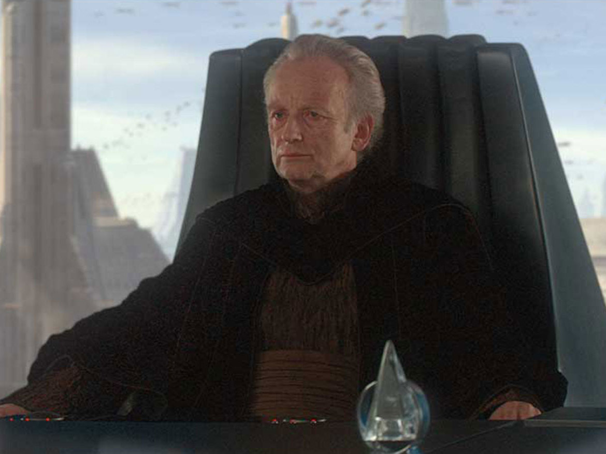
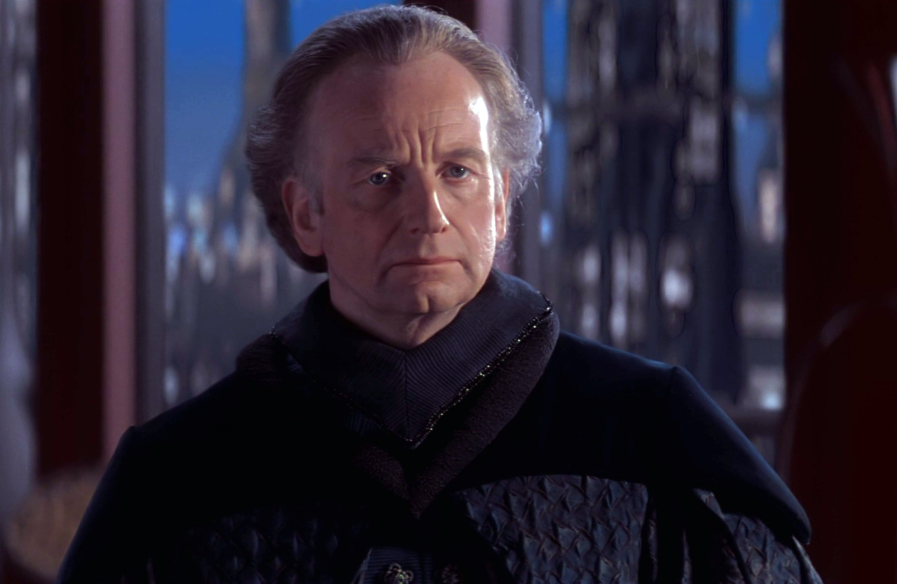
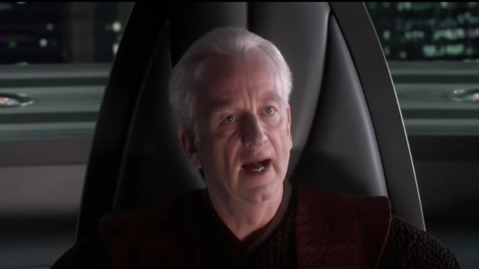
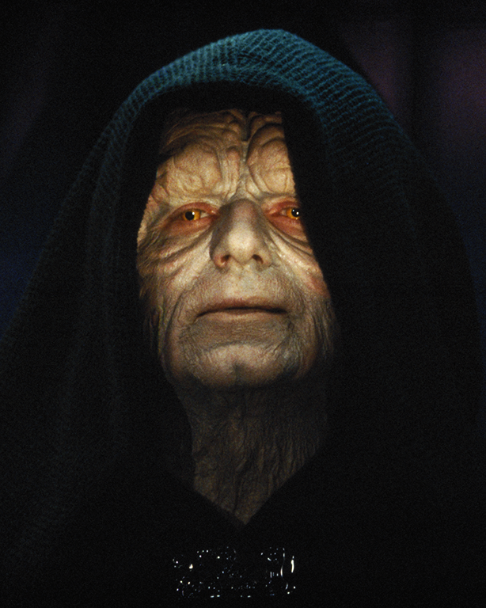

| Sheev | Frank | The Senate | Emperor |
|---|---|---|---|
|
- -Senator Palpatine of Naboo- -  |
-I must be Frank, your Majesty-  |
- - - - -I AM the Senate- - - - - -  |
- -The First Galactic Empire- -  |